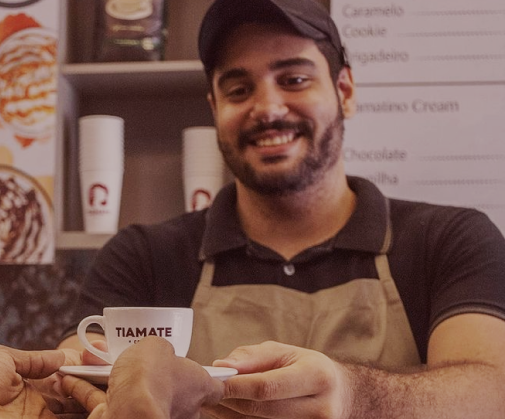

Um café quentinho aqui na Tiamate


Colheita
A colheita acontece quando a maioria dos frutos já estão maduros. Tudo começa com uma seleção criteriosa das
sementes de café. Elas são escolhidas, plantadas e mantidas em viveiros especiais, que darão origem às mudas.
As plantinhas passam por diversas etapas de crescimento e quando alcançam de quatro a seis pares de
folhas
em
seus galhos, são levadas para os solos que abrigarão o cafezal.


Torragem
Este procedimento é todo controlado por operadores à distância. Quando o café alcança a temperatura de 140°C,
acontecem interações entre as proteínas, gorduras e açúcares presentes nele.
Cada café possui uma curva de torra, então, a temperatura e o tempo podem variar. Secos, os grãos
descansam por três horas e perdem gás carbônico. Em seguida, estão prontos para serem pesados e armazenados.
Moagem
Ela é feita através da combinação de diversos tipos de café. Esta “mistura” varia de acordo com o perfil do
consumidor, podendo ser um produto gourmet, que leva toques mais suaves; do tipo forte, que é mais amargo e
menos ácido; ou até mesmo aromático, que conta com sabores adicionais.
A mistura é preparada mecanicamente. Então, ela é encaminhada para um rolo mecânico, que quebrará os grãos,
até chegar à granulometria ideal do produto. Depois da moagem, o café deve descansar por três horas para
liberar mais gás carbônico.

Classificação
Para que os grãos sejam armazenados, eles passam por “testes”, que os classificarão de acordo com a qualidade.
Depois de moídos, os grãos são colocados em um aparelho que irá enviar raios infravermelhos ao pó de café.
De acordo com a luminescência refletida, o produto é classificado em números, que apontam uma variedade mais
fraca ou mais forte.

Depoimentos
Tudo sobre Tiamate Coffee
-
O café é realmente bom, e os salgados também (pedi um croissant de 4 queijos). Já havia pedido antes via iFood mas resolvi fazer uma visita enquanto andava pelo Centro, o café fica mesmo ao lado da Praça do Ferreira. Vale a pena dar uma visitada quando quiser se refrescar com um café gelado deles ou tomar um café da manhã por lá.

Kalil Sousa
-
O café é realmente bom, e os salgados também (pedi um croissant de 4 queijos). Já havia pedido antes via iFood mas resolvi fazer uma visita enquanto andava pelo Centro, o café fica mesmo ao lado da Praça do Ferreira. Vale a pena dar uma visitada quando quiser se refrescar com um café gelado deles ou tomar um café da manhã por lá.

Kalil Sousa
-
Excelente café no Centro da cidade. Vale a pena uma passará para quem estiver passando pela região.
Kalil Sousa
-
√ìtimo lugar para descansar tomando aquele caf√©, cappuccino, matte, tiamatte...üòç meu ref√∫gio de descanso em meio ao turbulento centro de Fortal City! rs
Kalil Sousa